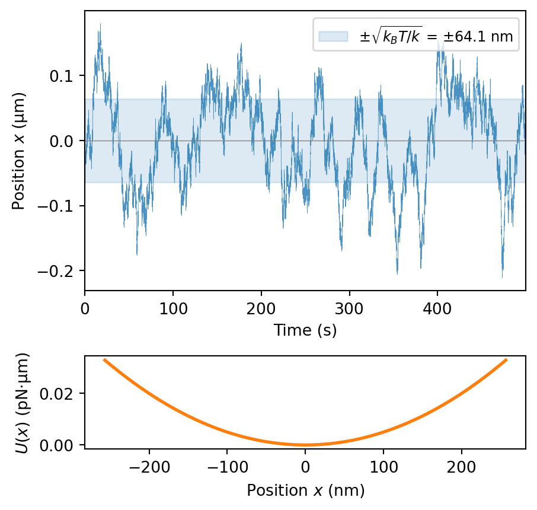
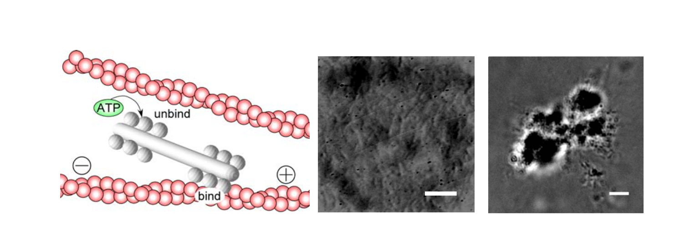
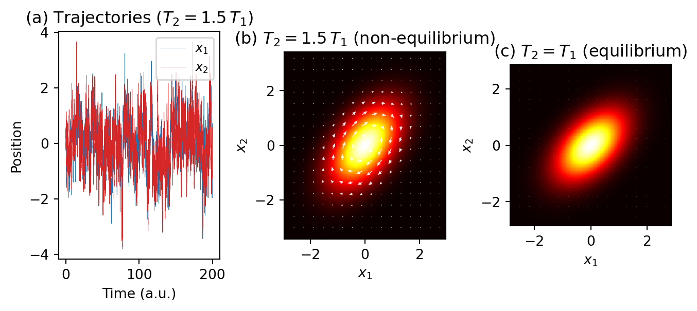

Equilibrium statistical mechanics may seem like a contradictory starting point for understanding fundamentally non-equilibrium phenomena in active matter. However, we begin with these concepts precisely because understanding how and why active systems violate equilibrium principles illuminates their unique properties. In this section, we review key equilibrium concepts that provide a crucial reference frame against which we can measure and characterize the non-equilibrium nature of active systems.
Canonical ensemble and partition function
For a system in thermal equilibrium with a heat bath at temperature \(T\) not exchanging particles with the environment, the probability of finding the system in a microstate with phase space coordinates \(\Gamma = \{\mathbf{q}, \mathbf{p}\}\) is given by the Boltzmann distribution:
\[P(\Gamma) = \frac{1}{Z} e^{-\beta H(\Gamma)}\]
What is a microstate?
A microstate is a complete specification of the instantaneous state of every particle in the system. For a classical system of \(N\) particles, a microstate is defined by all \(3N\) positions \(\mathbf{q} = (\mathbf{q}_1, \mathbf{q}_2, \dots, \mathbf{q}_N)\) and all \(3N\) momenta \(\mathbf{p} = (\mathbf{p}_1, \mathbf{p}_2, \dots, \mathbf{p}_N)\), giving a single point \(\Gamma = \{\mathbf{q}, \mathbf{p}\}\) in \(6N\)-dimensional phase space.
As a simple illustration, consider 4 coins. Each specific sequence of heads and tails – say HHTH – is a microstate. The macrostate “3 heads” does not specify which coins show heads, so it is realized by 4 distinct microstates: HHHT, HHTH, HTHH, and THHH. The macrostate “2 heads” has even more microstates (6), making it the most probable outcome – a combinatorial fact that foreshadows the role of entropy.
In contrast, a macrostate is characterized by a few macroscopic observables (e.g. temperature, pressure, volume). Many distinct microstates can correspond to the same macrostate – the number of such microstates is directly related to the entropy of that macrostate via the Boltzmann relation \(S = k_B \ln \Omega\).
where \(\beta = 1/(k_B T)\), \(k_B\) is Boltzmann’s constant, \(H(\Gamma)\) is the Hamiltonian of the system, and \(Z\) is the partition function:
In this expression, \(h\) is Planck’s constant, \(N\) is the number of particles, and the factors \(h^{3N}\) and \(N!\) account for the quantum uncertainty principle and the indistinguishability of identical particles, respectively. This normalization ensures that the partition function is dimensionless.
In physical terms, the Boltzmann distribution reflects how energy is partitioned among the available states at thermal equilibrium. States with lower energy are exponentially more likely to be occupied than states with higher energy. For active matter systems, this distribution is significantly altered because energy is continuously injected at the microscopic level, driving the system away from this equilibrium distribution. Indeed, active systems generally cannot be described by a time-independent Hamiltonian at all, as they involve non-conservative forces.
The partition function is central to statistical mechanics as it connects microscopic properties to macroscopic observables. For instance, the average energy is:
\[\langle H \rangle = -\frac{\partial \ln Z}{\partial \beta}\]
This relationship highlights how the partition function serves as a generating function for thermodynamic quantities. When studying active matter, we’ll see that traditional partition functions often cannot be defined because these systems don’t explore phase space according to Boltzmann statistics.
Sedimentation Example
Figure 1: Perrin’s sedimentation experiments. The exponential decay in the number density of colloidal particles with height directly confirmed the Boltzmann distribution and provided key evidence for the atomic theory of matter.
A clear demonstration of the Boltzmann distribution’s power can be derived from the canonical partition function using the barometric distribution of particles in a gravitational field. Consider colloidal particles suspended in a fluid in a gravitational field \(g\).
The Hamiltonian for a particle at height \(h\) with momentum \(p\) is:
\[H(h, p) = \frac{p^2}{2m} + mgh\]
where the first term represents the kinetic energy and the second term is the gravitational potential energy. For this system, we can construct the partition function by integrating over all possible heights and momenta:
This direct connection between the Hamiltonian, partition function, and the observable barometric distribution provides a compelling experimental verification of statistical mechanics. Jean Perrin used this relationship in 1908 to experimentally determine Avogadro’s number and provide crucial evidence for the atomic theory of matter. Today, similar experiments with colloidal particles serve as textbook demonstrations of statistical mechanics in action.
Free energy and thermodynamic potentials
The Helmholtz free energy is a thermodynamic potential that determines the maximum useful work obtainable from a closed system at constant temperature and volume. Named after German physicist Hermann von Helmholtz, it represents the amount of energy available to do non-expansion work. The Helmholtz free energy is particularly relevant in statistical mechanics because it serves as the fundamental bridge between microscopic properties (encoded in the partition function) and macroscopic thermodynamic behavior. For systems in the canonical ensemble – where the number of particles, volume, and temperature are fixed – the Helmholtz free energy provides the appropriate thermodynamic potential whose minimum determines the equilibrium state.
The Helmholtz free energy \(F\) is related to the partition function by:
\[F = -k_B T \ln Z = -k_B T \ln \left(\frac{1}{h^{3N}N!}\int e^{-\beta H(\Gamma)} d\Gamma\right)\]
where the normalization factor \(\frac{1}{h^{3N}N!}\) ensures proper dimensionless units in the partition function, with \(h\) being Planck’s constant and \(N\) the number of particles.
We can rewrite this as \(F = E - TS\), explicitly showing the competition between the enthalpic (energy) and entropic contributions:
\[F = \langle H \rangle - TS\]
where \(\langle H \rangle\) is the average energy:
\[S = -\left(\frac{\partial F}{\partial T}\right)_V = k_B \ln Z + \frac{\langle H \rangle}{T}\]
At equilibrium, minimizing the free energy involves a fundamental competition between:
Energy minimization: The system tends to occupy low-energy states to minimize \(\langle H \rangle\)
Entropy maximization: The system tends to spread over many accessible states to maximize \(S\)
The Boltzmann distribution \(P(\Gamma) = \frac{1}{Z}e^{-\beta H(\Gamma)}\) represents the optimal compromise between these competing tendencies. For systems with fixed particle number, volume, and temperature (canonical ensemble), this distribution precisely minimizes the free energy subject to the constraints of the canonical ensemble.
The principle of free energy minimization is particularly important for understanding the contrast with active systems. In active matter, free energy is constantly being pumped into the system through microscopic driving mechanisms (e.g., molecular motors in cell cytoskeleton, metabolic processes in bacteria, or artificial propulsion mechanisms in synthetic swimmers). These systems involve non-conservative forces that cannot be derived from a Hamiltonian, so they cannot be described by a minimum free energy principle, which is a fundamental departure from equilibrium thermodynamics.
Harmonic Oscillator Example
The harmonic oscillator provides another illuminating example of equilibrium statistical mechanics. Consider a Brownian particle in a harmonic potential \(U(x) = \frac{1}{2}kx^2\) provided by some highly focused light beam. Here \(k\) is the spring constant.
Figure 2: Sketch of a colloidal particle trapped in the focus of a microscopy lens due to electromagnetic forces. source
The particle experiences both a restoring force and random thermal kicks from the surrounding fluid.
The Hamiltonian for this system is:
\[H(x,p) = \frac{p^2}{2m} + \frac{1}{2}kx^2\]
where \(m\) is the particle mass, \(x\) is position, and \(p\) is momentum. The partition function is:
Therefore, the mean-square displacement of the particle is:
\[\langle x^2 \rangle = \frac{k_B T}{k}\]
This simple relation demonstrates how thermal energy causes the particle to explore the potential well, with the stiffness of the spring determining the confinement. Stiffer springs (larger \(k\)) lead to smaller position fluctuations.
Ergodicity and detailed balance
A key assumption in equilibrium statistical mechanics is ergodicity – the equivalence between time averages and ensemble averages:
\[\langle A \rangle_{\text{time}} = \lim_{T\to\infty} \frac{1}{T} \int_0^T A(t) dt = \langle A \rangle_{\text{ensemble}}\]
In practical terms, ergodicity means that if you observe a single system for a sufficiently long time, it will eventually visit all microscopic states consistent with its macroscopic constraints, allowing time averages to equal ensemble averages. Active matter systems often violate ergodicity by persistently exploring only a subset of the available phase space due to their self-propulsion mechanisms. This has profound implications for both experimental measurements and theoretical descriptions of active systems.
Equilibrium dynamics satisfies detailed balance, a microscopic time-reversal symmetry condition that ensures there are no net probability currents between any pair of states.
Deriving the detailed balance condition
In a stationary state, the probability of each state is constant in time. One way to guarantee this is to require that the probability flux between every pair of states vanishes individually – not just in aggregate. For states \(i\) and \(j\) with transition rates \(W_{i\to j}\) and \(W_{j\to i}\), this pairwise balance reads:
The left side is the probability flow from \(i\) to \(j\); the right side is the reverse flow. Setting them equal ensures zero net current on every link. Rearranging gives the ratio of transition rates:
This is the detailed balance condition: the ratio of forward to reverse transition rates is fixed by the energy difference between the two states. Note that detailed balance is a stronger requirement than stationarity – a stationary distribution can also be maintained by cyclic probability currents that cancel globally but not pairwise. Such cyclic currents are precisely what appears in non-equilibrium active systems.
For transitions between states \(i\) and \(j\) with rates \(W_{i\to j}\) and \(W_{j\to i}\), the detailed balance condition requires:
In the sedimentation example, we can apply detailed balance to particles moving between different heights in a gravitational field. Consider transitions between heights \(h_i\) and \(h_j\):
The equilibrium probability to find a particle at height \(h\) is \(P(h) \propto e^{-\beta mgh}\)
For a particle moving from height \(h_i\) to a higher position \(h_j\), the energy difference is \(\Delta E = mg(h_j - h_i)\)
By detailed balance, the transition rates must satisfy:
This reveals that upward transitions (against gravity) are exponentially suppressed compared to downward transitions. If we observe the system over time, we would see particles moving both up and down, but with precisely balanced rates that maintain the exponential density profile.
From detailed balance to trajectory reversibility
Detailed balance constrains individual transitions, but it also has a powerful consequence for entire trajectories. To see how, consider a particle that visits a sequence of heights \(h_0 \to h_1 \to h_2 \to \cdots \to h_n\) over successive time steps. The probability of this forward trajectory is proportional to the product of the individual transition rates:
The time-reversed trajectory \(\bar{\gamma}\) follows the same sequence of heights in reverse order, \(h_n \to h_{n-1} \to \cdots \to h_0\), with probability:
Each numerator cancels with the denominator of the next factor – \(P^{\text{eq}}(h_1)\) in the first numerator cancels with \(P^{\text{eq}}(h_1)\) in the second denominator, and so on. All intermediate terms vanish, leaving only the first denominator and last numerator:
This is the multiplicative analogue of a telescoping sum \(\sum (a_{k+1} - a_k) = a_n - a_0\) – a chain of ratios where neighboring terms cancel pairwise, leaving only the endpoints.
This is a remarkable result: in equilibrium, every trajectory and its time-reverse are equally probable. If we filmed a sedimenting particle and played the recording backward, the reversed motion would be statistically indistinguishable from the forward motion. No systematic currents exist in the steady state – particles diffuse up and down, but any apparent “uphill” motion is precisely balanced by “downhill” motion, with no net circulation in phase space.
Note that the telescoping cancellation only works because detailed balance holds for every pair of states. If even a single link carries a net current (as happens in active systems), the product no longer collapses and time-reversal symmetry is broken – forward and backward trajectories acquire different weights, producing the probability flux loops we will encounter later.
Connecting to Fluctuation Theorems
The trajectory reversibility derived above – \(P[\gamma]/P[\bar{\gamma}] = 1\) in equilibrium – is a special case of more general fluctuation theorems that apply even to non-equilibrium systems. These theorems quantify the probability of observing trajectories that appear to violate the second law of thermodynamics.
Connection to Fluctuation Theorems
Crooks Fluctuation Theorem: For a system driven out of equilibrium, the ratio of forward to reverse trajectory probabilities is related to the total entropy production:
Equilibrium Special Case: When detailed balance holds, there is no net entropy production (\(\Delta S_{\text{tot}} = 0\)), and we recover \(P[\gamma]/P[\bar{\gamma}] = 1\) as derived above.
Active Systems: For active particles, self-propulsion injects energy and produces entropy at a rate \(\dot{S}_{\text{act}} > 0\), so:
Forward trajectories (aligned with the active driving) become more probable than their time-reverses, breaking the symmetry that characterizes equilibrium.
Master Equation Formulation
Detailed balance can be elegantly formulated in terms of a master equation, which provides a powerful framework for understanding the time evolution of probability distributions. The master equation describes how the probability \(P_i(t)\) of finding the system in state \(i\) evolves over time:
where \(W_{j→i}\) is the transition rate from state \(j\) to state \(i\).
The first term represents probability flowing into state \(i\) from all other states \(j\), while the second term represents probability flowing out of state \(i\) to all other states \(j\).
Application to Sedimentation
For sedimentation, we can discretize the height into levels \({h_i}\). The master equation becomes:
This recovers our previous expression for detailed balance in sedimentation.
Violation in Active Systems
For active particles, we would have additional terms in the master equation representing the active motion. The condition above would no longer be satisfied, and instead, we would find:
where \(P^{ss}\) denotes the non-equilibrium steady state distribution.
Brownian motion and the Langevin equation
Brownian motion provides a simple yet powerful model for understanding thermal fluctuations. In colloidal and biological systems the Reynolds number is extremely low (typically \(10^{-5}\) to \(10^{-2}\)), so viscous forces dominate over inertia and particles stop moving almost instantaneously when driving ceases. This leads to the overdamped Langevin equation, the natural starting point for active matter physics:
where \(\gamma\) is the friction coefficient, \(U(x)\) is the potential energy, and \(\xi(t)\) is Gaussian white noise with:
\[\langle\xi(t)\rangle = 0, \quad \langle\xi(t)\xi(t')\rangle = 2\gamma k_B T \delta(t-t')\]
The noise amplitude is tied to the friction coefficient – the same microscopic collisions that cause energy dissipation also generate fluctuations, with temperature setting their relative strength. This connection between noise and friction is a first hint of the fluctuation-dissipation relation we will formalize below.
Full inertial Langevin equation
When inertial effects matter (larger particles, shorter timescales), the full Langevin equation retains the acceleration term:
The overdamped limit is recovered when the momentum relaxation time \(m/\gamma\) is much shorter than all other timescales of interest, so that the left-hand side can be set to zero.
Fluctuation-dissipation relation (FDT)
The Fluctuation-Dissipation Theorem (FDT) connects two seemingly different phenomena: the random thermal fluctuations that naturally occur in a system at equilibrium, and how that same system responds when deliberately disturbed by an external force. To see concretely what this means, consider a trapped Brownian particle.
Trapped Brownian particle
A microscopic particle in an optical tweezer (a harmonic potential created by focused laser light) jiggles around randomly due to collisions with surrounding fluid molecules. The FDT tells us that by simply measuring how much this particle naturally jiggles, we can predict exactly how far it would move if we applied a small external force.
The overdamped Langevin equation for a colloidal particle in a one-dimensional harmonic trap reads:
where \(k\) is the trap stiffness and \(F_{ext}(t)\) is any external force we might apply. The following simulation shows a typical trajectory (with \(F_{ext} = 0\)). The particle fluctuates around the trap center, with excursions whose magnitude is set by \(k_B T / k\) and whose correlation time is \(\tau_k = \gamma/k\).
Code
import numpy as npimport matplotlib.pyplot as plt# ParameterskBT =4.114e-3# pN * µm at T = 300 Kk =1.0# trap stiffness in pN/µmgamma =10.0# friction coefficient in pN·s/µmtau_k = gamma / k # relaxation time in s# Simulationdt =0.01# time step in sN =50000# number of stepst = np.arange(N) * dtx = np.zeros(N)np.random.seed(42)noise_amp = np.sqrt(2* gamma * kBT * dt)for i inrange(1, N): x[i] = x[i-1] + (-k * x[i-1] / gamma) * dt + (noise_amp / gamma) * np.random.randn()sigma_eq = np.sqrt(kBT / k) # equilibrium standard deviationfig, (ax1, ax2) = plt.subplots(2, 1, figsize=(5, 5), gridspec_kw={'height_ratios': [3, 1], 'hspace': 0.35})# Top: trajectoryax1.plot(t, x, lw=0.3, color='C0', alpha=0.8)ax1.axhline(0, color='gray', lw=0.5)ax1.fill_between(t, -sigma_eq, sigma_eq, alpha=0.15, color='C0', label=rf'$\pm\sqrt{{k_B T/k}}$ = $\pm${sigma_eq*1e3:.1f} nm')ax1.set_xlabel('Time (s)')ax1.set_ylabel('Position $x$ (µm)')ax1.set_xlim(0, t[-1])ax1.legend(fontsize=9, loc='upper right')# Bottom: potentialx_pot = np.linspace(-4* sigma_eq, 4* sigma_eq, 200)U =0.5* k * x_pot**2ax2.plot(x_pot *1e3, U, 'C1', lw=2)ax2.set_xlabel('Position $x$ (nm)')ax2.set_ylabel(r'$U(x)$(pN·µm)')plt.show()

Figure 3: Simulated trajectory of a Brownian particle in a harmonic trap. Top: position \(x(t)\) as a function of time showing thermal fluctuations around the trap center. The shaded band marks \(\pm\sqrt{k_B T/k}\), the equilibrium standard deviation. Bottom: the corresponding harmonic potential \(U(x) = \frac{1}{2}kx^2\), illustrating the confinement. Parameters: \(k = 1\) pN/µm, \(\gamma = 10\) pN·s/µm, \(T = 300\) K.
The FDT connects two quantities measurable from this system:
The position autocorrelation function\(C(t-t')\), which tells us how the particle’s random motions are correlated across time:
where \(\Theta(t-t')\) is the Heaviside step function (ensuring causality – the system cannot respond before the force is applied).
The FDT directly relates these quantities through temperature:
\[\chi(t-t') = -\frac{1}{k_B T}\frac{d}{dt}C(t-t') \quad \text{for } t > t'\]
Both quantities share the same exponential kernel \(e^{-k(t-t')/\gamma}\) – one describes spontaneous fluctuations, the other describes the driven response, and temperature is the only bridge between them.
Power spectral density
The FDT becomes especially transparent in the frequency domain. The power spectral density (PSD) \(S(\omega)\) is defined as the Fourier transform of the autocorrelation function (Wiener-Khinchin theorem):
where \(\omega_k = k/\gamma\) is the corner (angular) frequency. This Lorentzian shape has two characteristic regimes:
Low frequencies (\(\omega \ll \omega_k\)): \(S(\omega) \approx \frac{2 k_B T}{k^2/\gamma}\) – a flat plateau. The trap confines the particle, so long-time fluctuations are bounded.
High frequencies (\(\omega \gg \omega_k\)): \(S(\omega) \approx \frac{2 k_B T}{\gamma \omega^2}\) – the spectrum falls off as \(1/\omega^2\). At short times, the particle diffuses freely and doesn’t feel the trap yet.
The corner frequency \(f_k = \omega_k / 2\pi = k/(2\pi\gamma)\) marks the crossover between these regimes and directly encodes the ratio of trap stiffness to friction.
Figure 4: Power spectral density of a trapped Brownian particle. The Lorentzian spectrum (blue) transitions from a flat plateau at low frequencies to a \(1/f^2\) decay at high frequencies. The corner frequency \(f_k = k/(2\pi\gamma)\) (dashed line) marks the crossover. Parameters: \(k = 1\) pN/µm, \(\gamma = 10\) pN·s/µm, \(T = 300\) K.
The general FDT
The trapped particle illustrates a general principle. For any system in thermal equilibrium, the FDT relates the power spectral density of spontaneous fluctuations to the dissipative part of the response:
where \(\chi''(\omega)\) is the imaginary part of the frequency-dependent susceptibility. This frequency-domain form is particularly useful experimentally, since both \(S(\omega)\) and \(\chi''(\omega)\) can be measured independently and compared directly. In the FDT violation experiments discussed below, the key diagnostic is precisely this comparison: in equilibrium the two agree, while in active systems the measured \(S(\omega)\) exceeds the prediction from \(\chi''(\omega)\) – the excess spectral power is a direct, frequency-resolved fingerprint of non-equilibrium energy input.
Deriving the general FDT from the time-domain form
The general FDT in the time domain reads:
\[\chi(t-t') = -\frac{1}{k_B T}\frac{d}{dt}C(t-t') \quad \text{for } t > t'\]
The full complex susceptibility \(\chi(\omega)\) is the one-sided Fourier transform of this response function:
Taking the imaginary part of \(\chi(\omega)\) and using the Wiener-Khinchin theorem (\(S(\omega)\) is the full Fourier transform of \(C(t)\)) recovers the compact frequency-domain form \(\chi''(\omega) = \frac{\omega}{2k_B T}S(\omega)\).
The FDT is a powerful tool in equilibrium systems, but it breaks down in active matter. In active systems, energy is continuously injected at the microscopic level through self-propulsion mechanisms. This additional energy input means that fluctuations can be much larger than what would be predicted from the system’s response properties using the equilibrium FDT. How can we detect and quantify such departures from equilibrium? Two complementary strategies have emerged: measuring FDT violation directly, and detecting broken detailed balance through probability flux loops in phase space.
Detecting non-equilibrium behavior
FDT violation
One powerful diagnostic is to independently measure both the spontaneous fluctuations and the mechanical response of a system, then check whether the equilibrium FDT relates them correctly. Any discrepancy reveals hidden energy input, even when the system superficially resembles a thermal one.
Actin–myosin cytoskeletal networks – Mizuno et al. (Science, 2007) reconstituted a minimal cytoskeletal network from purified actin filaments, cross-linkers, and myosin II motor proteins. Using optical-tweezer microrheology, they simultaneously measured (i) the spontaneous fluctuations of embedded probe particles and (ii) the mechanical response of the network to small applied forces. In the absence of ATP (no motor activity), the FDT was satisfied – the fluctuation spectrum and the response function were related exactly as predicted by equilibrium theory. Upon adding ATP, myosin motors began generating contractile stresses, and the fluctuation spectrum exceeded the equilibrium prediction by up to two orders of magnitude at low frequencies, while the mechanical response function remained largely unchanged. This dramatic excess of fluctuations over what the response would predict is a direct, quantitative signature of FDT violation driven by molecular motor activity.

Figure 5: Left: Schematic of the reconstituted actin–myosin network. Myosin II minifilaments (white) bind to and exert forces on cross-linked actin filaments (red), driven by ATP hydrolysis. Center and right: Phase-contrast microscopy images of the network with embedded probe particles used for microrheology measurements. Scale bars: 10 µm. Adapted from Mizuno et al. (Science, 2007).
Hair bundle oscillations in the inner ear – Martin, Hudspeth & Bhatt (PNAS, 2001) studied the mechanosensitive hair bundles of bullfrog saccular hair cells, which oscillate spontaneously due to an active process powered by ATP hydrolysis. By comparing the power spectrum of spontaneous bundle oscillations with the bundle’s linear mechanical response to small stimuli, they demonstrated a clear violation of the FDT. To quantify the departure from equilibrium, they introduced an effective temperature\(T_{\text{eff}}(\omega)\) defined through the ratio of the fluctuation spectrum to the response:
At equilibrium, \(T_{\text{eff}}(\omega) = T\) for all frequencies. Instead, they found that \(T_{\text{eff}}\) diverged near the bundle’s characteristic oscillation frequency (~8 Hz), exceeding the bath temperature by several orders of magnitude – a striking signature of energy injection by the active process at a specific frequency scale.
Broken detailed balance
A complementary approach does not require measuring a response function at all. Instead, one tracks the system’s trajectory through a coarse-grained phase space (CGPS) and looks for net probability currents – directed cyclic flows that violate detailed balance. In equilibrium, transitions between any two states are pairwise-balanced; persistent flux loops are the hallmark of a non-equilibrium steady state. The following examples, all drawn from Battle et al. (Science, 2016), illustrate this strategy across different biological and model systems.
Two Brownian particles with non-uniform temperatures
To concretely illustrate how equilibrium concepts break down when thermal equilibrium is violated, consider a simple model: two Brownian particles connected by springs, with different temperatures.
Consider the following system:
Two Brownian particles with positions \(x_1\) and \(x_2\)
Particle 1 is connected to a fixed wall by a spring with constant \(k_1\)
The two particles are connected to each other by a spring with constant \(k_2\)
Particle 2 is connected to a fixed wall by a spring with constant \(k_3\)
Particle 1 experiences thermal fluctuations at temperature \(T_1\)
Particle 2 experiences thermal fluctuations at temperature \(T_2\)
However, when \(T_1 \neq T_2\), the system is driven out of equilibrium, leading to a non-Boltzmann stationary distribution. The correlation between \(x_1\) and \(x_2\) encodes information about the non-equilibrium nature of the system.
The following simulation reproduces the key result of Battle et al. (Science, 2016): when the two particles are at different temperatures, persistent probability currents appear in the \((x_1, x_2)\) phase space, directly revealing broken detailed balance. Compare the simulation output with the published figure below.
Code
import numpy as npimport matplotlib.pyplot as pltfrom scipy.linalg import solve_continuous_lyapunov# ── Parameters ──k1, k2, k3 =1.0, 1.0, 1.0gamma1, gamma2 =1.0, 1.0kBT1 =1.0kBT2_neq =1.5* kBT1kBT2_eq = kBT1# Drift matrix: dx/dt = A x + noise# gamma1 dx1/dt = -(k1+k2) x1 + k2 x2# gamma2 dx2/dt = k2 x1 - (k2+k3) x2A = np.array([[-(k1 + k2) / gamma1, k2 / gamma1], [ k2 / gamma2, -(k2 + k3) / gamma2]])def analytical_flux(kBT1, kBT2):""" Compute the exact stationary distribution and probability current for the linear system from the Fokker-Planck equation. The stationary P is Gaussian with covariance Sigma from the Lyapunov equation: A Sigma + Sigma A^T + 2D = 0. The probability current is J(x) = Q x P(x), where Q = A + D Sigma^{-1}. In equilibrium Q = 0; out of equilibrium Q is antisymmetric, giving a pure rotational current. """ D = np.array([[kBT1 / gamma1, 0], [0, kBT2 / gamma2]])# Solve Lyapunov equation: A Sigma + Sigma A^T = -2D Sigma = solve_continuous_lyapunov(A, -2* D) Sigma_inv = np.linalg.inv(Sigma)# Current matrix: J(x) = Q x P(x) Q = A + D @ Sigma_invreturn Sigma, Sigma_inv, Q# ── Simulation for time series ──dt =0.005N =500_000N_discard =10_000def simulate(kBT1, kBT2, N, dt): x1 = np.zeros(N) x2 = np.zeros(N) s1 = np.sqrt(2* kBT1 * dt / gamma1) s2 = np.sqrt(2* kBT2 * dt / gamma2) rng = np.random.randn(2, N -1)for i inrange(1, N): f1 =-(k1 + k2) * x1[i-1] + k2 * x2[i-1] f2 = k2 * x1[i-1] - (k2 + k3) * x2[i-1] x1[i] = x1[i-1] + (f1 / gamma1) * dt + s1 * rng[0, i-1] x2[i] = x2[i-1] + (f2 / gamma2) * dt + s2 * rng[1, i-1]return x1[N_discard:], x2[N_discard:]np.random.seed(42)x1_neq, x2_neq = simulate(kBT1, kBT2_neq, N, dt)# ── Analytical solutions ──Sigma_neq, Sinv_neq, Q_neq = analytical_flux(kBT1, kBT2_neq)Sigma_eq, Sinv_eq, Q_eq = analytical_flux(kBT1, kBT2_eq)# ── Figure ──fig, axes = plt.subplots(1, 3, figsize=(8,3), gridspec_kw={'wspace': 0.4})# (a) Time seriest_plot = np.arange(len(x1_neq)) * dtt_max =200mask_t = t_plot < t_maxaxes[0].plot(t_plot[mask_t], x1_neq[mask_t], lw=0.3, color='C0', label='$x_1$')axes[0].plot(t_plot[mask_t], x2_neq[mask_t], lw=0.3, color='C3', label='$x_2$')axes[0].set_xlabel('Time (a.u.)')axes[0].set_ylabel('Position')axes[0].legend(fontsize=9, loc='upper right')axes[0].set_title(r'(a) Trajectories ($T_2 = 1.5\,T_1$)')def plot_flux_map(ax, Sigma, Sinv, Q, title):# Grid spanning ±3 sigma in each direction s1 = np.sqrt(Sigma[0, 0]) s2 = np.sqrt(Sigma[1, 1]) lim1, lim2 =3.5* s1, 3.5* s2 x1g = np.linspace(-lim1, lim1, 200) x2g = np.linspace(-lim2, lim2, 200) X1, X2 = np.meshgrid(x1g, x2g)# Exact Gaussian probability density det = np.linalg.det(Sigma) pos = np.stack([X1, X2], axis=-1) # shape (200, 200, 2) exponent =-0.5* np.einsum('...i,ij,...j', pos, Sinv, pos) P = np.exp(exponent) / (2* np.pi * np.sqrt(det))# Exact probability current: J(x) = Q x P(x)# J1 = (Q[0,0]*x1 + Q[0,1]*x2) * P# J2 = (Q[1,0]*x1 + Q[1,1]*x2) * P J1 = (Q[0, 0] * X1 + Q[0, 1] * X2) * P J2 = (Q[1, 0] * X1 + Q[1, 1] * X2) * P# Plot probability density im = ax.pcolormesh(x1g, x2g, P, cmap='hot', shading='auto')# Overlay flux arrows on a coarser grid skip =12 Xs, Ys = X1[::skip, ::skip], X2[::skip, ::skip] J1s, J2s = J1[::skip, ::skip], J2[::skip, ::skip] mag = np.sqrt(J1s**2+ J2s**2) mag_max = np.max(mag)if mag_max >1e-10: ax.quiver(Xs, Ys, J1s, J2s, color='white', alpha=0.9, scale=mag_max *20, width=0.005, headwidth=4, headlength=5)else:# Equilibrium: show tiny random-looking arrows to indicate ~zero flux ax.quiver(Xs, Ys, J1s, J2s, color='white', alpha=0.4, scale=1e-6, width=0.003, headwidth=3, headlength=4) ax.set_xlabel('$x_1$') ax.set_ylabel('$x_2$') ax.set_title(title) ax.set_aspect('equal') ax.set_xlim(-lim1, lim1) ax.set_ylim(-lim2, lim2)#plt.colorbar(im, ax=ax, shrink=0.8, label='$P(x_1, x_2)$')# (b) Non-equilibriumplot_flux_map(axes[1], Sigma_neq, Sinv_neq, Q_neq,r'(b)$T_2 = 1.5\,T_1$(non-equilibrium)')# (c) Equilibriumplot_flux_map(axes[2], Sigma_eq, Sinv_eq, Q_eq,r'(c)$T_2 = T_1$(equilibrium)')plt.show()

Figure 6: Two coupled Brownian particles. (a) Simulated time series of \(x_1\) (blue, \(T_1\)) and \(x_2\) (red, \(T_2 = 1.5\,T_1\)). (b) Stationary probability distribution (color) and exact probability current (white arrows) for \(T_2 = 1.5\,T_1\): the rotational flux reveals broken detailed balance. (c) Same for \(T_2 = T_1\) (equilibrium): the current vanishes everywhere. Parameters: \(k_1 = k_2 = k_3 = 1\), \(\gamma_1 = \gamma_2 = 1\), \(k_B T_1 = 1\).
Compare the simulation above with the published result from Battle et al.:
Figure 7: Brownian-dynamics simulation of 1D bead-spring model from Battle et al. (Science, 2016). (A) Model schematic. (B) Time series of the bead positions for \(T_2 = 1.5\,T_1\) and equal spring constants. (C) Probability distribution (color) and flux map (white arrows) for \(T_2 = 1.5\,T_1\), showing rotational probability currents. (D) Same for \(T_2 = T_1\) (equilibrium), with no systematic flux.
In the non-equilibrium case (\(T_2 \neq T_1\)), energy flows from the hotter to the colder particle, driving the system away from equilibrium. The probability flux maps reveal persistent rotational currents in the \((x_1, x_2)\) phase space – a direct visualization of broken detailed balance. In contrast, the equilibrium case (\(T_2 = T_1\)) shows no systematic flux, consistent with detailed balance. The stationary state in the non-equilibrium case represents a balance between this energy flow and dissipation, rather than a state of maximum entropy as in equilibrium systems.
Chlamydomonas Swimming
The microalgae Chlamydomonas Reinhardtii provides a striking demonstration of broken detailed balance in a living system.
Figure 8: Light microscopy image of Chlamydomonas Reinhardtii, a single-celled green alga with two flagella used for swimming and sensing. source
Chlamydomonas Reinhardtii propels itself through fluid by coordinated beating of its two flagella. This motion requires continuous energy consumption, as each flagellum hydrolyzes ATP to power molecular motors that generate rhythmic beating patterns. Unlike passive Brownian particles, where motion arises from random thermal fluctuations, the flagellar beating represents a driven, non-equilibrium process.
As shown in the figures below, researchers have characterized this non-equilibrium behavior by analyzing the flagellar dynamics in a coarse-grained phase space (CGPS) constructed from the principal bending modes. The beating patterns can be decomposed into these fundamental modes (similar to Fourier components), allowing quantitative tracking of the flagellar configuration over time.
The phase space probability distribution and corresponding flux maps reveal a striking signature of non-equilibrium dynamics: coherent probability currents that form closed loops. These directed cyclic trajectories through configuration space explicitly violate detailed balance, which would require all microscopic transitions to be pairwise-balanced with no net probability flux between states. In an equilibrium system, transitions between any two states would occur with equal frequency in both directions when properly weighted by their equilibrium probabilities.
Figure 9: Detailed balance and actively beating Chlamydomonas flagella. (A) In thermodynamic equilibrium, transitions between microscopic states are pairwise-balanced, precluding net flux among states. (B) Nonequilibrium steady states can break detailed balance and exhibit flux loops. (C) Snapshots separated by 24 (orange-yellow), 7, and 10 ms in an isolated Chlamydomonas flagellum’s beat cycle (movie S1). Arrows on the central circle indicate the direction of time. Color corresponds to position in (E). (D) The first three bending modes for a freely suspended flexible rod. (E) A three-dimensional (3D) probability flux map of flagellar dynamics in the CGPS spanned by the first three modes source.
The flux maps in panels F and G below show clear rotational currents in the phase space of bending modes. These currents represent the flagellum cycling through configurations in a specific sequence rather than randomly exploring available states as would occur in thermal equilibrium. The directed nature of these probability currents directly quantifies the system’s departure from equilibrium.
Figure 10: (F and G) Probability distribution (color) and flux map (white arrows) of flagellar dynamics in CGPS spanned by first and second modes (F), and first and third modes (G). The white legend indicates the flux scale. source
These probability flux loops are fundamental to biological function, enabling directed motion and mechanical work that would be thermodynamically prohibited under equilibrium constraints. Similar non-equilibrium dynamics appear in many biological systems, from molecular motors and cell migration to collective tissue behaviors, where energy consumption drives the system away from equilibrium to perform essential biological functions.
Primary cilia in epithelial cells
Primary cilia represent another biological system that exhibits non-equilibrium dynamics, but in a more subtle manner than the flagella of Chlamydomonas. These hairlike organelles project from many eukaryotic cells and transduce mechanical and chemical stimuli into intracellular signals. Unlike flagella, primary cilia often lack the dynein machinery necessary for active beating, causing them to fluctuate in what appears to be a random manner.
When analyzed in the phase space defined by their deflection angle and curvature, primary cilia of MDCK (Madin-Darby canine kidney) epithelial cells reveal clockwise circulation patterns in their probability flux maps. These patterns indicate broken detailed balance, providing direct evidence of non-equilibrium dynamics in these seemingly passive structures. The statistical significance of these flux loops can be quantified, confirming that these cilia indeed operate far from equilibrium despite their apparently random motion.
Figure 11: Left: Schematic of primary cilium and anchoring of the basal body in the cell cortex with angle q and curvature, k, defined positive as shown. Right: Snapshots of cilium, from differential interference contrast microscopy, taken at time points marked in (B). Scale bar: 2 mm.